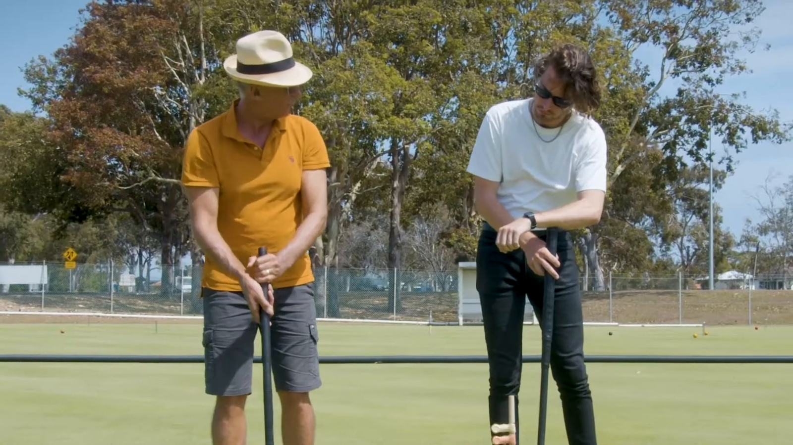

Get started
New players are always welcome at Stephens Croquet Club. Come and try a session or two at no charge. Beginner coaching and playing equipment provided.
Come and try, it's freeYour first sessions are free
Coaching and gear are provided. Come on any play day.
What to know
All year round
Come and enjoy croquet all year round. It is a great activity for all ages, parties, team building and work functions.
The courts and clubhouse
Stephens Croquet Club has four full size courts and a clubhouse suitable for hire for your next meeting or event. To organise a clubhouse booking, phone the club on 0413 732 986.
Which game to start with
Croquet combines the skill of billiards and the strategy of chess but outdoors on grass. At Stephens Croquet, the two games played are Association Croquet (the "original" croquet) and Golf Croquet, a more recent game which is easy to learn. Ricochet is also played at times. More new players start with Golf Croquet.
Visit on a play day
We play on Wednesday, Friday, Saturday and Sunday. See the playing times.

What to wear
Flat-soled shoes are a must on the courts. Comfortable clothes and a hat for the sun. Everything else is provided.
Phone 0413 732 986Gateball, too
A team game
Gateball was invented in 1947 in Hokkaido, Japan, by Eiji Suzuki, as a team game for young people that could be played with limited resources. It spread quickly through Japan, especially among the retired community, and is now played in dozens of countries. Instead of the single ball and long game of Association Croquet, gateball is played by two teams using numbered balls on a court about half the size of a croquet lawn, with each game run to a set time.
At Stephens
Stephens members have taken an interest in gateball alongside Association Croquet, Golf Croquet and Ricochet. It is a fast, social, team-based way into the sport, and CAQ runs competitions each year across all four croquet codes.